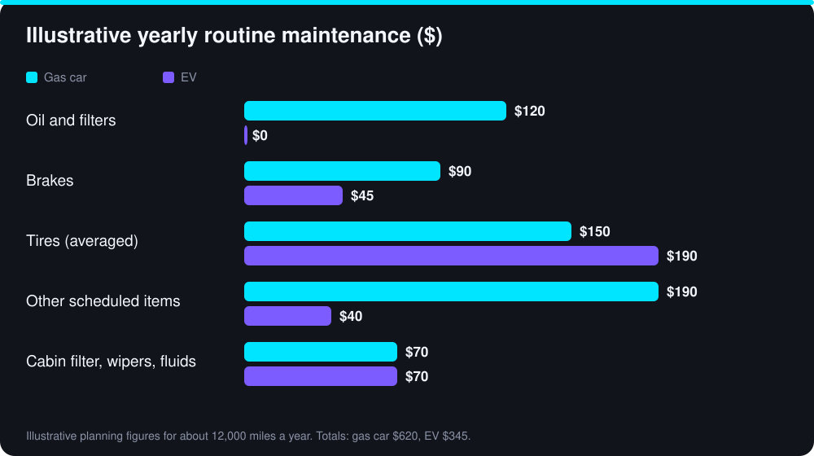

Ask an EV owner what they like best and many will mention the same thing: they stopped thinking about the car. There is no oil to change, no exhaust to rust and far fewer moving parts in the drivetrain. But "low maintenance" is not the same as "no maintenance." This guide sets out what an electric car really needs, what it costs in a worked example, and where owners are sometimes surprised.
What you stop paying for
A gas engine has hundreds of moving parts that wear and need fluids. An electric motor has very few. Compared with a gas car, an EV typically does not need:
- Engine oil and oil filter changes. The motor is sealed and does not burn or contaminate oil the way a combustion engine does.
- Spark plugs, ignition coils and fuel filters. There is no combustion and no fuel system.
- Timing belt or chain replacement, a costly job on many gas engines.
- Exhaust parts. No muffler, catalytic converter or exhaust pipes to corrode or replace.
- Multi-speed transmission service. Most EVs use a single-speed reduction gear, though some still specify gear oil changes at long intervals.
These savings are real and they repeat every year, which is why routine costs are usually lower over the life of the car.
What you still pay for
An EV is still a car. It rides on tires, stops with brakes, steers with a rack and sits on suspension. It also has systems a gas car does not, such as a battery cooling loop. Expect to keep paying for:
- Tires. They are the most common surprise, covered below.
- Cabin air filter and wipers. Same as any car, usually once a year or as the manual says.
- Brake fluid. It absorbs moisture over time, so manufacturers usually call for a change by age rather than mileage.
- Coolant. Many EVs use a coolant loop to keep the battery and power electronics at the right temperature. Intervals vary widely by maker, and some are very long, so follow your manual.
- Suspension and steering parts. EVs are heavy, which can load bushings, shocks and ball joints.
- The 12-volt battery. Even an EV has a small conventional battery for accessories, and it wears out like any other.
- Air-conditioning service if the system loses performance.
Tires: the biggest routine cost
Batteries are heavy, and electric motors deliver torque instantly. Together they can wear tires faster than on a similar gas car, especially if you accelerate hard or skip rotations. Many EVs also use tires designed for low rolling resistance or with sound-absorbing foam, which can cost more to replace.
- Check pressures at least monthly. Low pressure raises rolling resistance, cuts range and wears the edges of the tread.
- Rotate on the schedule in your manual, often every 5,000 to 8,000 miles, and keep the alignment checked.
- Choose replacement tires with the correct load rating for your model. Ask the shop for EV-rated options.
- Smooth acceleration saves tread as well as energy.
Brakes: lasting longer, but not maintenance-free
Most EVs slow down by using the motor as a generator, a process called regenerative braking. Because the motor does much of the slowing, the friction brakes are used less, and pads and rotors can last far longer than on a gas car.
There is a catch. Brakes that are rarely used can develop surface rust and sticking caliper slides, especially in wet or salted-road climates. Some manufacturers suggest an occasional firm stop, and a shop should inspect and clean the brakes at each service. Brake fluid still ages regardless of how often you brake.
A worked example: routine upkeep per year
The numbers below are illustrative planning figures for about 12,000 miles a year, not measured averages. Your costs will depend on the model, where you live and who does the work. Use them to see the pattern, then replace them with quotes from your own shop.

| Item | Gas car (per year) | EV (per year) |
|---|---|---|
| Oil and filters | $120 | $0 |
| Brakes | $90 | $45 |
| Tires (averaged) | $150 | $190 |
| Other scheduled items (plugs, belts, transmission, exhaust) | $190 | $40 |
| Cabin filter, wipers, fluids | $70 | $70 |
| Total | $620 | $345 |
On these assumptions the EV saves about $275 a year, or roughly $1,375 over five years. Notice that tires are the one line where the EV costs more. If you also charge at home, the lower energy cost adds to the gap. See our true cost of owning an EV guide for the full five-year picture.
The big-ticket items: battery and power electronics
The item people worry about most is the battery. Modern packs are designed to last many years, and many manufacturers cover them for roughly eight years or 100,000 miles, with some offering more. Terms differ, including how much capacity loss is covered, so read your warranty. Our guide to EV battery degradation explains what is typical.
Outside warranty, repairs to the battery, onboard charger or power electronics can be expensive, and not every independent shop is equipped to work on high-voltage systems. That is why service records, the warranty terms and the availability of qualified technicians matter, particularly if you plan to keep the car for a long time or buy a used one. Our used EV checklist covers what to check before you buy.
Where to get an EV serviced
Routine jobs such as tires, wipers, filters and brake service can be done by a good independent shop. For anything involving the high-voltage system, use a dealer or a shop with EV-trained technicians. Orange cables mark high-voltage wiring. Do not work on them yourself: the voltages involved can cause serious injury.
Collision repair is another cost to keep in mind. Batteries and sensors can make bodywork more expensive, which is one reason EV insurance quotes can run higher than for a similar gas car.
A simple maintenance checklist
Intervals vary by model, so treat this as a starting point and follow your owner’s manual:
| Task | Typical timing |
|---|---|
| Check tire pressure | Monthly, and before long trips |
| Rotate tires and check alignment | Every 5,000–8,000 miles, or as the manual says |
| Replace cabin air filter | Every 1–2 years |
| Replace wipers | About once a year, or when streaking |
| Inspect and clean brakes | At each service, especially in salt or wet climates |
| Change brake fluid | By age, often every 2–3 years |
| Battery coolant service | As specified by the maker, often after many years |
| Test the 12-volt battery | Around year 3 to 5, or if warning lights appear |
How to keep costs down
- Keep tires inflated and rotated. It is the single best saving.
- Drive smoothly. It saves tread, brakes and energy.
- Install software updates. They can fix faults and sometimes improve efficiency.
- Keep every service record. It supports warranty claims and raises resale value.
- Get a second quote for repairs outside warranty, ideally from a shop that lists EV experience.
Bottom line
An EV usually costs less to maintain than a comparable gas car, mainly because it drops oil, ignition, exhaust and transmission service. Tires and the occasional coolant or brake-fluid service remain, and out-of-warranty repairs to high-voltage parts are the main risk. Add up maintenance alongside energy, insurance and purchase price using our break-even calculator before you decide.
Sources and further reading
Figures marked as illustrative are worked examples built from the stated assumptions, not measured averages. Prices, incentives and specifications change, so confirm current details with these primary sources before you decide.
- FuelEconomy.gov: Electric vehicles (US DOE / EPA)
- Alternative Fuels Data Center: Electric vehicles (US DOE)
- Your vehicle owner’s manual: service intervals, tire pressures and battery warranty terms
Frequently Asked Questions
No. Electric motors do not use engine oil that needs regular changing. Some EVs do call for gear oil or coolant service at long intervals, so follow the schedule in your owner’s manual.
Usually yes for routine upkeep, because they skip oil changes, spark plugs, timing belts and exhaust repairs. Tires can cost more, and out-of-warranty repairs to the battery or power electronics can be expensive.
They often do, because EVs are heavier and deliver torque instantly. Regular rotation, correct pressure and smooth driving reduce the extra wear.
Follow the interval in your owner’s manual. Many makers suggest an inspection about once a year or every 10,000 to 15,000 miles, with tires, brakes and cabin filter checked at that visit.
Bilal Ahmad Alvi
CEO, FutureAutoLab
Written and reviewed by Bilal Ahmad Alvi, CEO of FutureAutoLab, following our editorial policy. Spot an error? Tell us and we will correct it.